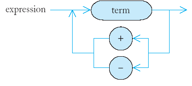

[]
[][]
[][][]
class Triangle {
public:
Triangle(int w);
int get_area() const;
private:
int width;
};
Triangle::Triangle(int w)
{ width = w; }
[]
int Triangle::get_area()
{ if (width == 1) return 1;
. . .
}
[]
[][]
[][][]
[][][][]
smaller_area + width
int Triangle::get_area()
{ if (width == 1) return 1;
Triangle smaller_triangle(width - 1);
int smaller_area = smaller_triangle.get_area();
return smaller_area + width;
}
double area = 0;
for (int i = 1; i <= width; i++) area = area + 1;
width * (width + 1) / 2
"eat"
"eta"
"aet"
"ate"
"tea"
"tae"
n! = 1 x 2 x 3 x . . . x n
n! = (n - 1)! x n
1! = 1
0! = 1
int factorial(int n)
{ if (n == 0) return 1;
int smaller_factorial = factorial(n - 1);
int result = smaller_factorial * n;
return result;
}
vector<string> generate_permutations(string word);
vector<string> v = generate_permutations("eat");
for(int i = 0; i < v.size(); i++)
cout << v[i] << "\n";
vector<string> generate_permutations(string word)
{ vector<string> result;
...
for (int i = 0; i < word.length(); i++)
{ string shorter_word = word.substr(0, i)
+ word.substr(i + 1, word.length() - i - 1);
...
}
return result;
}
vector<string> shorter_permutations
= generate_permutations(shorter_word);
for(int j = 0; j < shorter_permutations.size(); j++)
{ string longer_word = word[i] + shorter_permutations[j];
result.push_back(longer_word);
}
if (word.length() == 1)
{ result.push_back(word);
return result;
}
1, 1, 2, 3, 5, 8, 13, 21, 34, 55, . . .
int fib(int n)
{ if (n <= 2) return 1;
else return fib(n - 1) + fib(n - 2);
}
int fib(int n)
{ cout << "Entering fib: n = " << n << "\n";
int f;
if (n <= 2) f = 1;
else f = fib(n - 1) + fib(n - 2);
cout << "Exiting fib: n = " << n
<< " return value = " << f << "\n";
return f;
}
Entering fib: n = 6
Entering fib: n = 5
Entering fib: n = 4
Entering fib: n = 3
Entering fib: n = 2
Exiting fib: n = 2 return value = 1
Entering fib: n = 1
Exiting fib: n = 1 return value = 1
Exiting fib: n = 3 return value = 2
Entering fib: n = 2
Exiting fib: n = 2 return value = 1
Exiting fib: n = 4 return value = 3
Entering fib: n = 3
Entering fib: n = 2
Exiting fib: n = 2 return value = 1
Entering fib: n = 1
Exiting fib: n = 1 return value = 1
Exiting fib: n = 3 return value = 2
Exiting fib: n = 5 return value = 5
Entering fib: n = 4
Entering fib: n = 3
Entering fib: n = 2
Exiting fib: n = 2 return value = 1
Entering fib: n = 1
Exiting fib: n = 1 return value = 1
Exiting fib: n = 3 return value = 2
Entering fib: n = 2
Exiting fib: n = 2 return value = 1
Exiting fib: n = 4 return value = 3
Exiting fib: n = 6 return value = 8
int fib(int n)
{ if (n <= 2) return 1;
int fold = 1;
int fold2 = 1;
int fnew;
for (int i = 3; i <= n; i++)
{ fnew = fold + fold2;
fold2 = fold;
fold = fnew;
}
return fnew;
}
bool is_palindrome(string s)
bool is_palindrome (string s)
{ if (s.length() <= 1) return true;
char first = s[0];
char last = s[s.length() - 1];
if (first == last)
{ string shorter = s.substr(1, s.length() - 2);
return is_palindrome(shorter);
}
else return false;
}
bool is_palindrome(string s)
{ int start = 0;
int end = text.length() - 1;
while (start < end)
{ if (s[start] != s[end] return false;
start++;
end--;
}
return true;
}
3 + 4 * 5
(3 + 4) * 5
1 - (2 - (3 - (4 - 5)))

3 + 4 * 5
(3 + 4) * 5